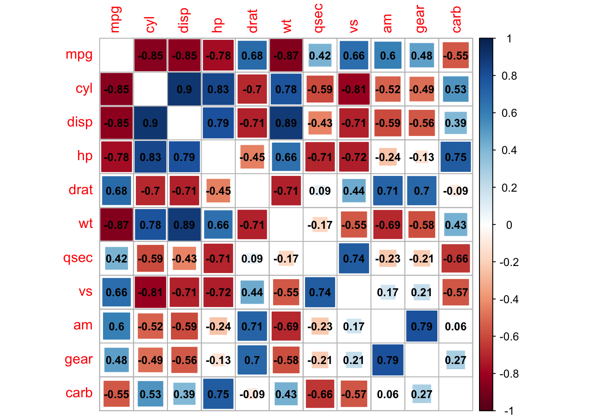
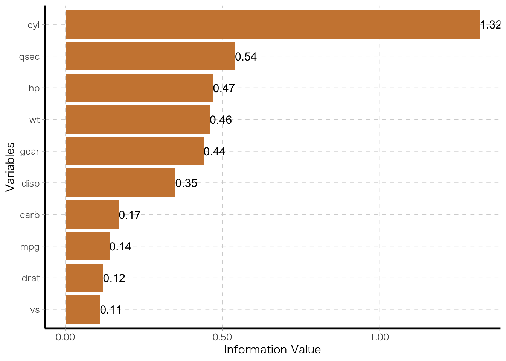
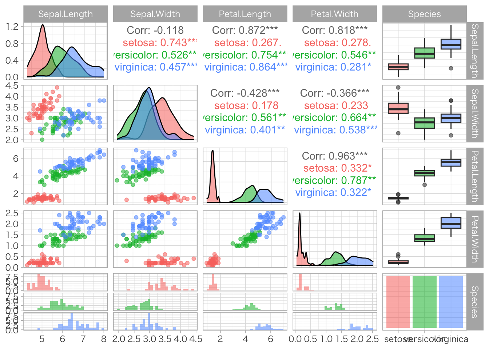

7 線形回帰
第7章「線形回帰」では、計量経済学の基本である線形回帰モデルについて解説します。この章の説明は、山本（2015）、西山 他（2019）、末石（2015）をもとにしています。詳細は各参考文献を参照してください。
実例は、西山 他（2019）のデータセットを使用し、北川（2020）のウェブサイトに掲載されているRコードを参考にしています。
7.1 第7章の準備
7.1.1 パッケージのインポート
library(estimatr)
library(GGally)
library(lmtest)
library(magrittr)
library(sandwich)
library(tidyquant)
library(tidyverse)7.1.2 外部データセットの取得
この章では、西山 他（2019）のデータセットを使用します。西山 他（2019）のサポートウェブサイトからデータファイルを取得し、各自の実行環境のワーキングディレクトリ直下にdata_nishiyamaフォルダを作成して、その中に格納してください。
7.2 用語の説明
まず、統計学・計量経済学で使用される基本的な用語を説明します。
7.2.1 標本と推定
母集団： 調べる対象全体（population）
標本： 母集団から取り出した対象の一部（sample）
推定： 標本を使って母集団の分布に関する未知の値を言い当てること（estimation）
未知パラメータ： 推定すべき未知の値。一般的に\(\theta\)で表す（unknown parameter）
統計量： 未知の値に依存せず、標本があれば値が計算できるデータの関数（statistic）
推定量： 推定に用いる統計量（estimator）
推定値： 未知の値について、実際にデータから計算して得た値（estimate）
点推定： 未知パラメータの値を1点で言い当てること（point estimation）
区間推定： 統計誤差を考慮して未知パラメータの値を区間で言い当てること（interval estimation）
統計誤差： 母集団全体でなく標本を用いることで推定結果に生じる誤差（statistical error）
7.3 最小2乗法（OLS）
次に、線形回帰の推定方法である最小2乗法と、統計的仮説検定について解説します。
変数\(X\)を用いて変数\(Y\)を推定する、次のようなモデルを考えます。
\[ Y_i = \beta_0 + \beta_1X_i + u_i \quad (i = 1,\, \ldots,\, n) \]
ここで、\(Y_i\)は被説明変数（dependent variable）、\(X_i\)は説明変数（independent variable）、\(u_i\)は誤差項（error term）と呼ばれます。誤差項は\(X_i\)以外で\(Y_i\)に影響を与える要因をひとまとめにしたものと解釈できます。
7.3.1 最小2乗法の仮定
次の3つの仮定が成立するとき、OLS推定量は推定の望ましい性質である「不偏性」、「一致性」、「漸近正規性」を満たします。
仮定1：データが無作為抽出
標本が同一の母集団から無作為抽出（ランダムサンプリング）されているという仮定であり、数学的には、\(Y_i\)と\(X_i\)が独立かつ同一の分布に従う（independently and identically distributed、i.i.d）と定義されます。
多くのクロスセクションデータでは仮定1が成立しますが、時系列データや、時系列の要素を含むパネルデータでは仮定1が成立しないと考えるのが自然です。家計の消費支出の慣性効果など、経済主体の行動は過去からの影響を受けやすく、過去と現在のデータに相関があることが多いためです。
仮定1が成立しない場合、誤差項が自己相関（autocorrelation）・系列相関（serial correlation）をもち、推定量のばらつきが大きくなる問題が発生します。そのような場合に、仮定1のもとで計算した標準誤差（推定量の標準偏差を推定した値）を用いると分散の大きさを過小評価してしまうため、自己相関の可能性を考慮したHAC標準誤差（ニューウィー＝ウェストの標準誤差）を用いる必要があります。
なお、HAC標準誤差のHACはHeteroskedasticity and Autocorrelation Consistentの略であり、自己相関（autocorrelation）の問題だけでなく、この後で紹介する不均一分散（heteroskedasticity）の問題が存在しても対応可能であることを意味しています。サンプルサイズが十分大きければ、誤差項に自己相関がない場合にHAC標準誤差を使用しても、大きな問題は生じません。したがって、誤って「自己相関がない」と判断するリスクを考慮すれば、常にHAC標準誤差を用いるのが無難です（西山 他（2019）P.493）。
仮定2：説明変数と誤差項が無相関
外生性と呼ばれる仮定であり、\(Y_i\)の変動要因のうち\(X_i\)以外の部分（すなわち誤差項\(u_i\)）が平均的には\(X_i\)と無関係であることを意味します。数学的には、誤差項の条件付き期待値が説明変数に依存しない（\(E(u_i|X_i) = 0\)）と定義されます。
仮定2が成立していれば、モデルが因果関係を表していると解釈できます（ただし、仮定3が成立しているかどうかを回帰分析の結果から判断することはできません）。
仮定2が成立しないケースは多く、例えば、説明変数に本来含まれるべき変数が欠落している欠落変数バイアス、被説明変数が説明変数の変動要因になっている内生性バイアス（逆の因果性）などがあります。
仮定2が成立しない場合、OLS推定量は不偏性と一致性を満たさず、未知パラメータの値をきちんと推定することができない深刻な問題が発生します。対処方法として、他の説明変数の追加（重回帰モデル）による欠落変数バイアスの解消、パネルデータを用いた固定効果モデルの推定、2段階最小2乗法や操作変数法による内生性バイアスの解消を検討する必要があります。
仮定3：異常値が少ない
標本に含まれる異常値（データの絶対値が平均から大幅に離れている値）が少ないという仮定であり、数学的には変数の4次のモーメントが有限（\(0 < E(X_i^4) < \infty, \quad 0 < E(Y_i^4) < \infty\)）と定義されます。すなわち、データの分布の裾が厚くない（ファット・テールでない）ということです。
一部の金融データなどでは異常値を取ることが多く（分布の裾が厚く）、仮定3が満たされない可能性があります。
仮定3が成立しない場合、OLS推定量が漸近正規性を満たさなくなります。漸近正規性は、直接的に推定量の良し悪しに関わる性質ではありませんが、係数に関する仮説検定や区間推定を行う基礎になる重要な性質です。
追加の仮定：誤差項の均一分散
被説明変数\(Y_i\)のデータの散らばり具合が説明変数\(X_i\)の値によらず一定であるとき、誤差項\(u_i\)の分散が一定、すなわち均一分散（homoskedasticity）であるといいます（\(Var(u|X) = E(u^2|X) = \sigma^2\)）。
仮定1～3に加えて「誤差項の均一分散」の仮定が成立している場合、OLS推定量は線形な不偏推定量の中で「効率性」が最も高くなります（ガウス＝マルコフの定理）。これは、推定量の分散が最も小さく、推定量が真の値に近い値を取りやすいことを意味します。この時の推定量を、最良線形不偏推定量（best linear unbiased estimator, BLUE）と呼びます。
しかし、経済データ（特にクロスセクションデータ）で「誤差項の均一分散」の仮定が成立することは少なく、誤差項\(u_i\)の分散が説明変数\(X_i\)に依存する不均一分散（heteroskedasticity）の方がむしろ一般的と考えられます。例えば、複数の家計の所得・消費データから消費関数を推定する際、所得水準が高いほど消費スタイルの違いによる消費額のばらつきが大きいことが想定されますが、その場合は均一分散の仮定が成立しません。
均一分散の仮定が成立しない（不均一分散が生じている）場合は、推定量の効率性が悪化し、ばらつきが大きくなってしまう問題があります。そのようなケースで均一分散を仮定して標準誤差（推定量の標準偏差を推定した値）を計算すると分散の大きさを過小評価してしまうため、不均一分散の可能性を考慮した不均一分散に頑健な標準誤差（ホワイトの標準誤差）を用いる必要があります。ただし、時系列データのように自己相関の可能性が考えられる場合は、上記のように不均一分散と自己相関に頑健なHAC標準誤差（ニューウィー＝ウェストの標準誤差）を用いる方が良いでしょう。
7.3.2 検定と信頼区間
帰無仮説と対立仮説
モデル\(Y_i = \beta_0 + \beta_1 X_i + u_i\)について、次のような帰無仮説\(H_0\)（null hypothesis）と対立仮説\(H_1\)（alternative hypothesis）を考えます。
\[ H_0 : \beta_1 = 0 \\ H_1 : \beta_1 \neq 0 \]
推定にあたり、我々が本当に興味があるのは未知パラメータ\(\beta_1\)の真の値であり、またそれを言い当てるための推定値と標準誤差であるわけですが、ここでは「少なくとも未知パラメータの真の値がゼロではない（有意である）」ことを統計的に確認するために、こうした検定を行います。
t値
検定にはt統計量（t値）を用います。t統計量は、未知パラメータの推定量と帰無仮説の設定値の差を、標準誤差（推定量の標準偏差を推定した値）で割ったものです。
\[ t = \frac{\text{推定量} - \text{帰無仮説の設定値（ここではゼロ）}}{\text{標準誤差}} \]
t値が大きいほど、推定値に対して相対的に標準誤差が小さいことを意味します。目安として、t値が1.9や1.6など絶対値で2に近い値より大きければ、推定値の標準誤差は未知パラメータの符号条件を変えるほど大きくなく、未知パラメータの真の値がゼロである可能性は低い（推定値が統計的に有意である）と判断できます。
p値
このt値を確率に置き換えたものがp値です。p値は「帰無仮説が正しいとしたときの確率分布のもとで、t値が観測したデータ（標本）から計算した値より極端な値をとる確率」を示したもので、t値が大きくなるほどp値は小さくなります。
p値は「帰無仮説が正しいとしたときの確率分布のもとで、観測したデータによる統計量の値、もしくはそれより極端な統計量をとる確率」と定義されます（McAlinn（2022）P.50）。p値がある一定の水準より小さければ、観測したデータは帰無仮説下では起こりにくいと判断し、帰無仮説\(H_0\)を棄却して対立仮説\(H_1\)を採択します。その際の「一定の水準」を有意水準と言い、一般的に5％や1％といった水準が用いられます。
p値の解釈については、いくつか注意点があります。
p値が有意水準より大きく、帰無仮説を棄却できなかった場合、帰無仮説が正しい（未知パラメータの真の値がゼロ）と結論付けることはできません。この場合は「未知パラメータの推定値が統計的に有意であることが確認できず、判断を留保する」ことになります。
p値は、帰無仮説を反証（棄却）するエビデンスの強さではありません。帰無仮説は正しいか正しくないかの二択でしかないため、p値そのものに意味はなく、あくまで事前に決めた有意水準に達したか達していないかの二分法になります。有意水準5％で棄却すると設定したのであれば、p値が4.99％でも0.01％でも関係ないということです。
p値は効果の大きさや結果の重要性を示すものではありません。ある説明変数が被説明変数にとって重要であるかを判断するためには、未知パラメータの推定値が有意かどうかに加えて、未知パラメータの推定値の大きさや、説明変数の変動量を考慮する必要があります。
信頼区間
信頼区間（confidence interval、CI）は、推定結果の精度を幅で示すものです。具体的には、未知パラメータの推定値と標準誤差を用い、ある一定の確率の下で未知パラメータの真の値を含む区間を計算します。その際の「一定の確率」を信頼係数といい、要求される推定の精度に応じ、一般的に95％や99％といった水準が用いられます。
信頼区間の解釈には注意が必要です。例えば、標本から未知パラメータの95％信頼区間が10～20と計算されたとき、これは「パラメータの真の値が95％の確率で10～20の間にある」ことを意味するものではありません。パラメータの真の値は定数であり、動かないのに対し、信頼区間は標本から計算した実現値のうちの一つであり、標本の選び方によりランダムに変わるためです。95％信頼区間の意味は、「同一の母集団から独立な標本が100回得られて、信頼区間を100回計算することができれば、そのうち95回はパラメータの真の値を含む」ということです（末石（2015）P.11）。
7.4 モデルの種類と係数の解釈
ここでは線形回帰モデルの具体的な推定式として、実務で頻繁に用いる水準モデル、対数モデル、変化率モデル、多項式モデル、交互作用モデル、ダミー変数モデルを取り上げ、それぞれの内容と係数の解釈方法を説明します。
7.4.1 水準モデル
\[ Y = \beta_0 + \beta_1 X + u \]
被説明変数\(Y\)、説明変数\(X\)ともにレベルの場合、係数\(\beta_1\)は、説明変数\(X\)が1単位変化すると被説明変数\(Y\)が\(\beta_1\)単位変化することを示します。
例えば、\(Y\)が実質賃金（円）、\(X\)が労働生産性（円）のとき、労働生産性が1円上昇すると実質賃金は\(\beta_1\)円上昇します。
7.4.2 対数モデル
両辺が自然対数の場合
\[ \ln Y = \beta_0 + \beta_1 \ln X + u \]
被説明変数\(\ln Y\)、説明変数\(\ln X\)ともに自然対数の場合、係数\(\beta_1\)は、説明変数\(X\)が1％変化したときに被説明変数\(Y\)が\(\beta_1\)％変化することを示します。このとき、\(\beta_1\)を弾性値（弾力性）と呼びます。
このように解釈できる理由は、次の通りです。変数\(X\)がある小さい量\(\Delta x\)だけ変化したときの\(\ln X\)の変化量を\(\Delta \ln X\)とすると、対数関数の性質を用いて、
\[ \Delta \ln X = \ln (X + \Delta x) - \ln X = \ln (1 + \frac{\Delta x}{X}) \approx \frac{\Delta x}{X} \]
となります。\(\Delta x / X\)は\(X\)の変化率なので、この式から、\(X\)が1％変化することと\(\ln X\)が0.01変化することはほぼ同じであることがわかります。すると、「\(X\)が1％変化する」＝「\(\ln X\)が\(0.01\)変化する」＝「\(\ln Y\)が\(0.01 \times \beta_1\)変化する」＝「\(Y\)が\(\beta_1\)％変化する」となります（西山 他（2019）P.107）。
どちらか一方の辺が自然対数の場合
\[ \begin{aligned} \ln Y &= \beta_0 + \beta_1 X + u \\ Y &= \beta_0 + \beta_1 \ln X + u \end{aligned} \]
被説明変数\(\ln Y\)が自然対数、説明変数\(X\)がレベルのとき、係数\(\beta_1\)は、説明変数\(X\)が1単位変化したときに被説明変数\(Y\)が\(\beta_1\)％変化することを示します。このとき、\(\beta_1\)を偏弾性値と呼びます。
逆に、被説明変数\(Y\)がレベル、説明変数\(\ln X\)が自然対数の場合、係数\(\beta_1\)は、説明変数\(X\)が1％変化したときに被説明変数\(Y\)が\(\beta_1/100\)単位変化することを示します。
7.4.3 変化率モデル
\[ \begin{aligned} 100 \times \frac{\Delta Y_t}{Y_{t-1}} &= \beta_0 + \beta_1 \times 100 \times \frac{\Delta X_t}{X_{t-1}} + u \\ 100 \times \Delta \ln Y_t &= \beta_0 + \beta_1 \times 100 \times \Delta \ln X_t + u \end{aligned} \]
時系列データについて、ある変数\(X_t\)と、その1期ラグ付き変数\(X_{t-1}\)の差\(X_t - X_{t-1}\)を階差と呼び、\(\Delta X_t = X_t - X_{t-1}\)と表します。階差\(\Delta X_t\)を1期ラグ付き変数\(X_{t-1}\)で割り、100を掛けてパーセント表示にした系列\(100 \times \Delta X_t / X_{t-1}\)を変化率と呼びます。
また、上記の対数モデルで見た\(\Delta \ln X \approx \Delta X / X\)を用いると、時系列データの変数\(X_t\)について自然対数の階差をとった\(\Delta \ln X_t = \ln X_t - \ln X_{t-1}\)に100を掛けた系列は、変化率\(100 \times \Delta X_t / X_{t-1}\)に近似できます。すなわち、\(100 \times \Delta \ln X_t \approx 100 \times \Delta X_t / X_{t-1}\)です。この\(100 \times \Delta \ln X_t\)を対数階差変化率と呼びます。
被説明変数と説明変数がともに変化率もしくは対数階差変化率のとき、係数\(\beta_1\)は、説明変数（変化率）が1％ポイント変化したときに、被説明変数（変化率）が\(\beta_1\)％ポイント変化することを示します。なお、このときの係数\(\beta_1\)は、対数モデルの係数の解釈である弾力性とは全く異なるものである点に注意してください。
7.4.4 多項式モデル
\[ Y = \beta_0 + \beta_1 X + \beta_2 X^2 + u \]
多項式の推定式では、説明変数\(X\)が入る項が複数あるため、\(\beta_1\)、\(\beta_2\)単独では\(X\)の変化による\(Y\)への影響を測ることができません。\(X\)の変化による\(Y\)への影響は、右辺を\(X\)で微分した結果である
\[ \frac{\partial(\beta_0 + \beta_1 X + \beta_2 X^2)}{\partial X} = \beta_1 + 2 \beta_2 X \]
で表されます。これを限界効果と呼びます。ただし、限界効果の大きさは\(X\)の値に依存するので、一定ではありません。そこで、限界効果の\(X\)を\(X\)の平均値\(\overline{X}\)で置き換えた平均限界効果\(\beta_1 + 2 \beta_2 \overline{X}\)も、\(X\)の変化による\(Y\)への影響を測る値をして使用されます。
なお、上記の例では、限界効果がゼロ、すなわち\(\beta_1 + 2 \beta_2 X = 0\)とおいて、\(X\)について解くと、\(X = -\beta_1 / 2 \beta_2\)が\(Y\)を最大もしくは最小にする\(X\)の値であることが計算できます。
7.4.5 交互作用モデル
\[ Y = \beta_0 + \beta_1 X_1 + \beta_2 X_2 + \beta_3 X_1 X_2 + u \]
交互作用モデルには、複数の変数の掛け算である交差項（ここでは\(X_1 X_2\)）が入っています。これは、説明変数\(X_1\)と\(X_2\)が互いに影響しながら相乗効果として被説明変数\(Y\)に影響するメカニズムを捉えています。
例えば、被説明変数\(Y\)が給与額、説明変数\(X_1\)と\(X_2\)がそれぞれ教育年数と勤続年数の交互作用モデルを推定すると、給与額は教育年数、勤続年数それぞれ単独の影響だけでなく、教育年数と勤続年数の相乗効果の影響も受けることを想定していることになります（山本（2015）P.40）。
上記の交互作用モデルにおける説明変数\(X_1\)の限界効果は\(\beta_1 + \beta_3 X_2\)、平均限界効果は\(\beta_1 + \beta_3 \overline{X_2}\)となります。
7.4.6 ダミー変数
切片ダミーの場合
\[ Y = \beta_0 + \beta_1 D + \beta_2 X + u \]
切片ダミーは、データの属性を区別するダミー変数\(D\)が単独の項として推定式に入っているモデルであり、被説明変数\(Y\)の平均的な水準がデータの属性により異なるメカニズムを捉えます。
例えば、被説明変数\(Y\)が給与額、説明変数\(X\)が勤続年数のモデルで、男性なら1、女性なら0をとる「男性ダミー変数」\(D\)を考えます。このとき、男性の給与額は\(Y = (\beta_0 + \beta_1) + \beta_2 X\)、女性の給与額は\(Y = \beta_0 + \beta_2 X\)で表されるため、男性ダミー\(D\)の係数\(\beta_1\)は給与額の男性プレミアム（またはディスカウント）を捉えたものと解釈できます。
なお、「男性ダミー変数」\(D\)の係数\(\beta_1\)が捉えているのは、比較の基準である女性の給与額との差であり、男性の給与額の絶対的な水準を示すものではありません。また、\(\beta_1\)は比較の基準である女性の給与額に関する情報は一切もっていません。
傾きダミーの場合
\[ Y = \beta_0 + \beta_1 X + \beta_2 D X+ u \]
傾きダミーは、ダミー変数\(D\)が説明変数\(X\)との交差項として推定式に入っているモデルであり、説明変数\(X\)の影響が属性により異なるメカニズムを捉えます。
例えば、被説明変数\(Y\)が給与額、説明変数\(X\)が勤続年数のモデルで、男性なら1、女性なら0をとる「男性ダミー変数」\(D\)を考えます。このとき、男性の給与額は\(Y = \beta_0 + (\beta_1 + \beta_2) X\)、女性の給与額は\(Y = \beta_0 + \beta_1 X\)で表されるため、男性ダミー\(D\)の係数\(\beta_2\)は給与額に対する勤続年数の効果を増幅（または縮小）させる影響を捉えたものと解釈できます。
なお、「男性ダミー変数」\(D\)の係数\(\beta_2\)が捉えているのは、比較の基準である女性の勤続年数効果との差であり、男性の勤続年数効果を示すものではありません。また、\(\beta_2\)は比較の基準である女性の勤続年数効果に関する情報は一切もっていません。
7.5 重回帰モデルの役割と注意点
線形重回帰モデルは、次のように説明変数を2つ以上もつ線形回帰モデルのことです。
\[ Y_i = \beta_0 + \beta_1X_{1i} + \beta_2X_{2i} + \dots + \beta_kX_{ki} + u_i \quad (i = 1,\, \ldots,\, n) \]
7.5.1 欠落変数バイアス
重回帰モデルを使用する主な目的は、最小2乗法の仮定3「説明変数と誤差項が無相関」が成立しない原因の一つである欠落変数バイアス（omitted variable bias）に対処するためです。
欠落変数バイアスは、被説明変数\(Y_i\)に影響を及ぼす変数を説明変数に含んでいないことによって起こります。こうした変数を交絡因子（confounding factor）と呼びます。
重回帰分析では、交絡因子の可能性がある変数を説明変数に追加し、欠落変数バイアスの問題を回避します。この作業をコントロールと呼び、追加される変数をコントロール変数と言います。コントロール変数は欠落変数バイアスを回避するためにモデルに追加されるため、コントロール変数が被説明変数に与える影響を推定することは主たる目的ではありません。
7.5.2 多重共線性
多重共線性には2つのケースがあります。
一つは完全な多重共線性（perfect multicollinearity）で、ある説明変数が他の説明変数の線形和によって表される場合が該当します。このとき、最小2乗推定量が一意に定まらないため、推定不能になります。
もう一つは不完全な多重共線性で、説明変数間に強い相関がある場合が該当します。一般的に多重共線性というときはこちらを差すことが多いでしょう。多重共線性が発生すると、推定量の分散が大きくなり、係数の正確な推定が困難になります。
多重共線性には有効な解決策はありません。重回帰モデルでは欠落変数バイアスを回避するためにコントロール変数を追加していることが多く、多重共線性に対処するためにコントロール変数を除外すれば、欠落変数バイアスを回避することができなくなるためです。
末石（2015）P.18では、「明らかに不要な説明変数が入っているときは別として、多重共線性をなくそうとあれこれと工夫をするよりも、多くの場合は放置しておくのが無難」、「多重共線性はないに越したことはないが、完全な多重共線性とは異なり、論理的な欠陥ではない」、「推定量の分散は大きくなるが、それは標準誤差に反映されるので、検定をしたり信頼区間を求める際には、特に問題にならない」としています。
7.5.3 変数選択の指針
ここでは、重回帰分析にとって重要な「どの変数を推定式に含めるべきか」について解説します。詳細は西山 他（2019）P.185を参照してください。
1. 欠落変数バイアスを避けられるか
興味がある説明変数が被説明変数に与える影響を正しく推定するためには、その説明変数と相関し、かつ被説明変数に影響を与える変数をコントロール変数として回帰モデルに含める必要があります。コントロール変数について注意すべき点は次の通りです。
- コントロール変数は分析対象として興味がなくても良い。
- 興味のある説明変数と無関係なコントロール変数を入れる必要はない。
- コントロール変数に関する欠落変数バイアスを考慮する必要はない。
- コントロール変数の係数は一致推定できず、係数の解釈は困難である（符号条件などが直感に反する結果でも気にする必要はない）。
2. 興味のある説明変数の影響の解釈が変わりうるか
重回帰分析では、モデルにどの変数を入れるかによって、係数の解釈が変わりえます。特に、興味ある説明変数が被説明変数に影響を与える経路の中間にある変数（中間経路の変数）をモデルに含めると、係数が本来の研究対象とは異なる解釈を持つ可能性があります。これを過剰制御と呼びます。
例えば、被説明変数を賃金、興味がある説明変数を教育として、教育が賃金に与える影響を分析する場合を考えます。ここで、変数として職業を入れると、職業は教育が賃金に影響を与える経路の中間に位置します。この時、教育の係数は、職業を固定した場合に教育の変化が賃金に与える影響を表すと解釈できますが、教育の変化は職業の変化を通じて賃金にも影響すると想定されるため、教育の係数は教育が賃金に与える影響すべてを捉えることができなくなります。
7.6 Rの単回帰モデル推定
線形単回帰モデル\(Y = \beta_0 + \beta_1 X + u\)を最小2乗法で推定するには、statsパッケージのlm()関数でformula引数をY ~ Xと設定します。
lm()関数が返すオブジェクトをsummary()関数で出力すると、係数の推定値、標準誤差、t値、p値、信頼区間の下限・上限値、決定係数、F検定の結果が表示されます。なお、lm()関数が計算する標準誤差は均一分散を仮定した標準誤差であり、不均一分散に頑健な標準誤差（HC・ホワイトの標準誤差）や、不均一分散と自己相関に頑健な標準誤差（HAC・ニューウィー＝ウェストの標準誤差）ではないことに注意してください。
ホワイトの標準誤差やニューウィー＝ウェストの標準誤差で係数の仮説検定を行うには、lmtestパッケージのcoeftest()関数と、sandwichパッケージのvcovHC()関数、NeweyWest()関数を使用します。
vcovHC()関数ではtype引数にconstを指定すると通常の均一分散を仮定した標準偏差が、HC0を指定するとホワイトの標準誤差が出力されます。また、HC1を指定するとSTATAのvce(robust)と同じ結果が出力され、西山 他（2019）実証例4.1でもこの標準誤差が記載されています。先行研究では線形回帰のシミュレーションに基づきHC3（vcovHC()関数のデフォルト値）、HC4、HC5の使用が推奨されています。
その他に、estimatrパッケージのlm_robust()関数でもホワイトの標準誤差を用いた仮説検定を行うことができます。lm_robust()関数のse_type引数にHC1を指定するとホワイトの標準誤差が計算されます。stats::lm()関数とestimatr::lm_robust()関数の違いについてはTokyoRの森下光之助氏のスライドを、estimatr::lm_robust()関数の数学的な説明は公式ウェブサイトを参照してください。
7.6.1 実例：線形単回帰
西山 他（2019）P.128～129に掲載されている「実証例4.1 労働生産性と実質賃金の関係」のデータセットを用い、実質賃金（wage）を被説明変数、労働生産性（productivity）を説明変数として、線形単回帰モデルを推定します。
このデータセットは、縦方向（行）が時系列、横方向（列）が変数の時系列データ（time series data）であり、時系列の頻度は年次、期間は1994〜2014年です。
なお、標準誤差は不均一分散に対して頑健な標準誤差（ホワイトの標準誤差）を使用します。
推定結果は、
\[ \text{実質賃金の推定量} = 276.13 + 0.55\,\text{労働生産性} \]
を意味しており、定数項と労働生産性の係数はどちらもp値が0.05より小さく、有意水準5％で帰無仮説が棄却されます。この結果から、統計的には労働生産性が100円上昇すると賃金が55円上がる傾向があると解釈できます。
# CSVデータを読み込み
data <- readr::read_csv(file = "data_nishiyama/ch04/ch04_wage.csv",
col_names = TRUE,
col_types = "ddd",
skip = 0
)
# GGally::ggpairs()関数でペアプロットを出力
data %>%
dplyr::select(productivity, wage) %>%
GGally::ggpairs()
# stats::lm()関数でwageをproductivityに回帰
lm_model <- stats::lm(formula = wage ~ productivity,
data = data
)
# 回帰した結果を出力
summary(lm_model)##
## Call:
## stats::lm(formula = wage ~ productivity, data = data)
##
## Residuals:
## Min 1Q Median 3Q Max
## -47.618 -17.612 4.186 21.946 37.052
##
## Coefficients:
## Estimate Std. Error t value Pr(>|t|)
## (Intercept) 276.12961 87.61057 3.152 0.00525 **
## productivity 0.54682 0.02442 22.395 4.04e-15 ***
## ---
## Signif. codes: 0 '***' 0.001 '**' 0.01 '*' 0.05 '.' 0.1 ' ' 1
##
## Residual standard error: 25.77 on 19 degrees of freedom
## Multiple R-squared: 0.9635, Adjusted R-squared: 0.9616
## F-statistic: 501.5 on 1 and 19 DF, p-value: 4.037e-15# ホワイトの標準誤差で係数の仮説検定を実施
lmtest::coeftest(lm_model,
vcov. = sandwich::vcovHC(lm_model, type = "HC1"))##
## t test of coefficients:
##
## Estimate Std. Error t value Pr(>|t|)
## (Intercept) 276.129607 71.255590 3.8752 0.001019 **
## productivity 0.546820 0.020463 26.7223 < 2.2e-16 ***
## ---
## Signif. codes: 0 '***' 0.001 '**' 0.01 '*' 0.05 '.' 0.1 ' ' 1# 回帰した結果をデータフレーム形式で出力する場合
estimatr::tidy(lm_model)## # A tibble: 2 × 5
## term estimate std.error statistic p.value
## <chr> <dbl> <dbl> <dbl> <dbl>
## 1 (Intercept) 276. 87.6 3.15 5.25e- 3
## 2 productivity 0.547 0.0244 22.4 4.04e-157.6.2 実例：回帰診断プロット
西山 他（2019）の実証例4.1で推定した線形単回帰モデルの結果を視覚的に検証するには、lm()関数で出力したモデルオブジェクトに対しplot()関数を適用し、回帰診断プロットを表示します。
回帰診断プロットでは推定した残差の動きを確認し、外れ値の有無やモデルの妥当性を判断します。
# 作図環境設定関数で2行2列の図表配置を指定
par(mfrow = c(2, 2))
# lm()関数で推定した結果をplot()関数で可視化
lm(formula = wage ~ productivity,
data = data
) %>%
plot()
Residual vs Fitted：横軸に予測値、縦軸に残差をとった散布図です。赤色の実線は回帰曲線を示しています。図中の数字はデータの行番号であり、数字が表示されている点は残差の絶対値が大きいことを意味します。この図は、残差の全体像を把握し、残差の独立性や系列相関の有無を検証するために用います。特に、予測値に対する点の分布が一様でなく、曲線的な傾向になっている場合は、説明変数と被説明変数の関係が線形ではない可能性が疑われます。
Normal Q-Q：横軸に標準正規分布の累積分布関数の分位点、縦軸に標準化した残差を大きさの順に並べたものの分位点をとったQQ（Quantile-Quantile）プロットです。残差が正規分布に従っているかどうかを検証します。データが直線上にある場合は、残差が正規分布に従っていることを意味します。
Scale-Location：横軸に予測値、縦軸に残差の絶対値の平方根をとった散布図です。予測値に対する点の分布が一様でなく、増加または減少する傾向がある場合は、誤差項の均一分散の仮定が成立していないと考えられます。
Residuals vs Leverage：横軸に梃子（てこ）値、縦軸に標準化した残差をとった散布図です。個々のデータが回帰係数の推定値へ与える影響度を判断します。赤色の点線はクック距離（Cook’s distance）と呼ばれ、特定のデータをモデルに含む場合と含まない場合で予測値がどれだけ変化するかを示します。クック距離が大きいと（一般的には0.5を超える場合）、そのデータが外れ値である可能性が高いと考えられます。
7.6.3 実例：対数・変化率モデルの推定
西山 他（2019）の実証例4.1のデータセットを利用して、両辺が自然対数のモデル、両辺が対数階差変化率のモデル、両辺が変化率のモデルを推定します。
自然対数はlog()関数で計算します。対数階差変化率は対数変換した値にtidyquant::CHANGE()関数を適用して対数階差を計算します。変化率はtidyquant::PCT_CHANGE()関数で求めることができます。
# 自然対数、対数階差変化率、変化率を計算
data %<>%
dplyr::mutate(ln_wage = log(wage),
ln_productivity = log(productivity),
dlog_wage = 100 * tidyquant::CHANGE(ln_wage),
dlog_productivity = 100 * tidyquant::CHANGE(ln_productivity),
pch_wage = 100 * tidyquant::PCT_CHANGE(wage),
pch_productivity = 100 * tidyquant::PCT_CHANGE(productivity)
)対数モデルにおける労働生産性の係数0.874は、労働生産性が1％変化すると実質賃金が0.874％変化することを示しています（弾性値）。また、同係数のp値は0.05を下回っており、統計的に有意であるといえます。
# 対数モデル
lm_model <- stats::lm(formula = ln_wage ~ ln_productivity,
data = data
)
summary(lm_model)##
## Call:
## stats::lm(formula = ln_wage ~ ln_productivity, data = data)
##
## Residuals:
## Min 1Q Median 3Q Max
## -0.021358 -0.007777 0.001910 0.009589 0.016859
##
## Coefficients:
## Estimate Std. Error t value Pr(>|t|)
## (Intercept) 0.55758 0.31276 1.783 0.0906 .
## ln_productivity 0.87424 0.03823 22.869 2.75e-15 ***
## ---
## Signif. codes: 0 '***' 0.001 '**' 0.01 '*' 0.05 '.' 0.1 ' ' 1
##
## Residual standard error: 0.01138 on 19 degrees of freedom
## Multiple R-squared: 0.9649, Adjusted R-squared: 0.9631
## F-statistic: 523 on 1 and 19 DF, p-value: 2.748e-15lmtest::coeftest(lm_model,
vcov. = sandwich::vcovHC(lm_model, type = "HC1"))##
## t test of coefficients:
##
## Estimate Std. Error t value Pr(>|t|)
## (Intercept) 0.55758 0.26022 2.1427 0.0453 *
## ln_productivity 0.87424 0.03191 27.3970 <2e-16 ***
## ---
## Signif. codes: 0 '***' 0.001 '**' 0.01 '*' 0.05 '.' 0.1 ' ' 1対数階差変化率は変化率の近似値なので、対数階差変化率モデルと変化率モデルはほぼ同じ推定結果になります。労働生産性の係数のp値はどちらも0.05を上回っており、有意ではありません。
# 対数階差変化率モデル
lm_model <- stats::lm(formula = dlog_wage ~ dlog_productivity,
data = data,
)
summary(lm_model)##
## Call:
## stats::lm(formula = dlog_wage ~ dlog_productivity, data = data)
##
## Residuals:
## Min 1Q Median 3Q Max
## -1.4550 -0.6120 -0.1980 0.7568 1.7000
##
## Coefficients:
## Estimate Std. Error t value Pr(>|t|)
## (Intercept) 0.7637 0.2642 2.890 0.00975 **
## dlog_productivity 0.2251 0.1469 1.532 0.14286
## ---
## Signif. codes: 0 '***' 0.001 '**' 0.01 '*' 0.05 '.' 0.1 ' ' 1
##
## Residual standard error: 0.9659 on 18 degrees of freedom
## (1 observation deleted due to missingness)
## Multiple R-squared: 0.1154, Adjusted R-squared: 0.06623
## F-statistic: 2.348 on 1 and 18 DF, p-value: 0.1429lmtest::coeftest(lm_model,
vcov. = sandwich::vcovHC(lm_model, type = "HC1"))##
## t test of coefficients:
##
## Estimate Std. Error t value Pr(>|t|)
## (Intercept) 0.76371 0.29002 2.6333 0.01687 *
## dlog_productivity 0.22506 0.17911 1.2566 0.22497
## ---
## Signif. codes: 0 '***' 0.001 '**' 0.01 '*' 0.05 '.' 0.1 ' ' 1# 変化率モデル
lm_model <- stats::lm(formula = pch_wage ~ pch_productivity,
data = data,
)
summary(lm_model)##
## Call:
## stats::lm(formula = pch_wage ~ pch_productivity, data = data)
##
## Residuals:
## Min 1Q Median 3Q Max
## -1.4699 -0.6224 -0.2023 0.7606 1.7141
##
## Coefficients:
## Estimate Std. Error t value Pr(>|t|)
## (Intercept) 0.7725 0.2682 2.881 0.00995 **
## pch_productivity 0.2225 0.1476 1.507 0.14906
## ---
## Signif. codes: 0 '***' 0.001 '**' 0.01 '*' 0.05 '.' 0.1 ' ' 1
##
## Residual standard error: 0.9774 on 18 degrees of freedom
## (1 observation deleted due to missingness)
## Multiple R-squared: 0.1121, Adjusted R-squared: 0.06276
## F-statistic: 2.272 on 1 and 18 DF, p-value: 0.1491lmtest::coeftest(lm_model,
vcov. = sandwich::vcovHC(lm_model, type = "HC1"))##
## t test of coefficients:
##
## Estimate Std. Error t value Pr(>|t|)
## (Intercept) 0.77250 0.29402 2.6274 0.01708 *
## pch_productivity 0.22252 0.18008 1.2357 0.23247
## ---
## Signif. codes: 0 '***' 0.001 '**' 0.01 '*' 0.05 '.' 0.1 ' ' 17.7 Rの重回帰モデル推定
重回帰モデルも、単回帰モデルと同様にstatsパッケージのlm()関数で推定します。重回帰モデルの場合は、formula引数にY ~ X1 + X2といった形で複数の説明変数を設定します。
7.7.1 実例：線形重回帰
西山 他（2019）の「実証例5.1 信頼と規範が経済成長に与える影響の重回帰分析」（P.151）と「実証例5.4 信頼と規範が経済成長に与える影響の重回帰分析の標準誤差」のデータセットを用い、信頼関係の強さと規範意識が経済成長に与える影響を、教育水準と初期時点での豊かさをコントロールして推定します。
このデータセットは縦方向（行）が都道府県、横方向（列）が変数の横断面データ（cross section data）です。都道府県名はid列の都道府県番号で表されています。
使用する変数は次の通りです。詳細は、西山 他（2019）第5章の9節（P.191）と補論A（P.203）を参照してください。
- y80： 1980年時点の人口1人当たりGDP（100万円）
- y99： 1999年時点の人口1人当たりGDP（100万円）
- trust80： 1980年時点の信頼関係の強さ（標準化した値）
- norm80： 1980年時点の規範意識の強さ（標準化した値）
- education80： 1980年時点の教育水準（標準化した値）
- did： 人口集中地区に居住する人口の割合
# CSVデータを読み込み
data <- readr::read_csv(file = "data_nishiyama/ch05/youdou.csv",
col_names = TRUE,
col_types = NULL,
skip = 0
)## Rows: 47 Columns: 23
## ── Column specification ────────────────────────────────────────────────────────────────────────────────────────────────────────────────
## Delimiter: ","
## dbl (22): id, y80, y90, y99, education80, trust80, trust96, norm80, norm96, ...
## lgl (1): X
##
## ℹ Use `spec()` to retrieve the full column specification for this data.
## ℹ Specify the column types or set `show_col_types = FALSE` to quiet this message.# 西山 他（2019）P.143～144に従い、各都道府県の人口1人当たりGDPの年平均経済成長率を計算
data %<>%
dplyr::mutate(ln_y80 = log(y80),
ln_y99 = log(y99),
gr_80_99 = 100 * (ln_y99 - ln_y80) / 19
)
# GGally::ggpairs()関数でペアプロットを出力
data %>%
dplyr::select(gr_80_99, trust80, norm80, education80, ln_y80, ln_y99, did) %>%
GGally::ggpairs(progress = FALSE)
まず、1980～1999年の年平均経済成長率を、信頼関係の強さと規範意識それぞれで説明する単回帰モデルを推定します。
これらモデルは、信頼関係の強さと規範意識の係数のp値がともに0.05より小さく、係数が有意であることを示しています。
lm_model <- stats::lm(formula = gr_80_99 ~ trust80,
data = data,
)
summary(lm_model)##
## Call:
## stats::lm(formula = gr_80_99 ~ trust80, data = data)
##
## Residuals:
## Min 1Q Median 3Q Max
## -0.68018 -0.29900 -0.00955 0.34100 0.80625
##
## Coefficients:
## Estimate Std. Error t value Pr(>|t|)
## (Intercept) 3.13936 0.06002 52.305 < 2e-16 ***
## trust80 0.22468 0.07172 3.133 0.00304 **
## ---
## Signif. codes: 0 '***' 0.001 '**' 0.01 '*' 0.05 '.' 0.1 ' ' 1
##
## Residual standard error: 0.4112 on 45 degrees of freedom
## Multiple R-squared: 0.179, Adjusted R-squared: 0.1608
## F-statistic: 9.813 on 1 and 45 DF, p-value: 0.003045lmtest::coeftest(lm_model,
vcov. = sandwich::vcovHC(lm_model, type = "HC1"))##
## t test of coefficients:
##
## Estimate Std. Error t value Pr(>|t|)
## (Intercept) 3.139355 0.060438 51.9434 < 2.2e-16 ***
## trust80 0.224683 0.066402 3.3837 0.001491 **
## ---
## Signif. codes: 0 '***' 0.001 '**' 0.01 '*' 0.05 '.' 0.1 ' ' 1lm_model <- stats::lm(formula = gr_80_99 ~ norm80,
data = data,
)
summary(lm_model)##
## Call:
## stats::lm(formula = gr_80_99 ~ norm80, data = data)
##
## Residuals:
## Min 1Q Median 3Q Max
## -0.96828 -0.15563 -0.03077 0.23198 0.61507
##
## Coefficients:
## Estimate Std. Error t value Pr(>|t|)
## (Intercept) 3.09054 0.04966 62.236 < 2e-16 ***
## norm80 0.55973 0.09109 6.145 1.9e-07 ***
## ---
## Signif. codes: 0 '***' 0.001 '**' 0.01 '*' 0.05 '.' 0.1 ' ' 1
##
## Residual standard error: 0.3346 on 45 degrees of freedom
## Multiple R-squared: 0.4563, Adjusted R-squared: 0.4442
## F-statistic: 37.76 on 1 and 45 DF, p-value: 1.902e-07lmtest::coeftest(lm_model,
vcov. = sandwich::vcovHC(lm_model, type = "HC1"))##
## t test of coefficients:
##
## Estimate Std. Error t value Pr(>|t|)
## (Intercept) 3.090543 0.048265 64.0330 < 2.2e-16 ***
## norm80 0.559733 0.070578 7.9307 4.348e-10 ***
## ---
## Signif. codes: 0 '***' 0.001 '**' 0.01 '*' 0.05 '.' 0.1 ' ' 1次に、説明変数に、教育水準と、豊かさの代理変数として1980年時点の対数GDP水準を追加した重回帰モデルを推定します。
信頼関係の強さの係数の推定値は、単回帰モデルの0.22から0.02へと大幅に低下していることが確認できます。単回帰モデルでは、教育水準や豊かさが経済成長率に与える影響が、誤って信頼関係の強さの影響として推定されていた可能性が示唆されます。また、信頼関係の強さの係数のp値は0.79と大きく、係数は有意ではありません。
lm_model <- stats::lm(formula = gr_80_99 ~ trust80 + education80 + ln_y80,
data = data,
)
summary(lm_model)##
## Call:
## stats::lm(formula = gr_80_99 ~ trust80 + education80 + ln_y80,
## data = data)
##
## Residuals:
## Min 1Q Median 3Q Max
## -0.45839 -0.21925 -0.00947 0.13042 1.03231
##
## Coefficients:
## Estimate Std. Error t value Pr(>|t|)
## (Intercept) 6.04885 0.48340 12.513 6.31e-16 ***
## trust80 0.02058 0.07066 0.291 0.772
## education80 2.61208 2.25858 1.157 0.254
## ln_y80 -2.38309 0.46001 -5.180 5.59e-06 ***
## ---
## Signif. codes: 0 '***' 0.001 '**' 0.01 '*' 0.05 '.' 0.1 ' ' 1
##
## Residual standard error: 0.3073 on 43 degrees of freedom
## Multiple R-squared: 0.5619, Adjusted R-squared: 0.5313
## F-statistic: 18.38 on 3 and 43 DF, p-value: 7.983e-08lmtest::coeftest(lm_model,
vcov. = sandwich::vcovHC(lm_model, type = "HC1"))##
## t test of coefficients:
##
## Estimate Std. Error t value Pr(>|t|)
## (Intercept) 6.048849 0.426429 14.1849 < 2.2e-16 ***
## trust80 0.020585 0.075639 0.2721 0.7868
## education80 2.612075 2.708569 0.9644 0.3403
## ln_y80 -2.383094 0.491469 -4.8489 1.658e-05 ***
## ---
## Signif. codes: 0 '***' 0.001 '**' 0.01 '*' 0.05 '.' 0.1 ' ' 1一方、規範意識の係数の推定値は重回帰モデルでも0.34と小さくなく、経済学的に意味のある結果（規範意識は経済成長率にとって重要な要素）であると考えられます。また係数のp値は0.018と、有意水準5％で統計的に有意であるといえます。
lm_model <- stats::lm(formula = gr_80_99 ~ norm80 + education80 + ln_y80,
data = data,
)
summary(lm_model)##
## Call:
## stats::lm(formula = gr_80_99 ~ norm80 + education80 + ln_y80,
## data = data)
##
## Residuals:
## Min 1Q Median 3Q Max
## -0.49006 -0.20688 -0.00209 0.14005 0.69585
##
## Coefficients:
## Estimate Std. Error t value Pr(>|t|)
## (Intercept) 5.2909 0.4838 10.935 5.34e-14 ***
## norm80 0.3383 0.1109 3.051 0.0039 **
## education80 4.3872 2.0275 2.164 0.0361 *
## ln_y80 -1.9911 0.4340 -4.588 3.85e-05 ***
## ---
## Signif. codes: 0 '***' 0.001 '**' 0.01 '*' 0.05 '.' 0.1 ' ' 1
##
## Residual standard error: 0.2789 on 43 degrees of freedom
## Multiple R-squared: 0.6391, Adjusted R-squared: 0.614
## F-statistic: 25.39 on 3 and 43 DF, p-value: 1.31e-09lmtest::coeftest(lm_model,
vcov. = sandwich::vcovHC(lm_model, type = "HC1"))##
## t test of coefficients:
##
## Estimate Std. Error t value Pr(>|t|)
## (Intercept) 5.29087 0.66824 7.9176 6.204e-10 ***
## norm80 0.33827 0.13698 2.4695 0.017578 *
## education80 4.38724 1.96109 2.2371 0.030513 *
## ln_y80 -1.99114 0.57457 -3.4654 0.001213 **
## ---
## Signif. codes: 0 '***' 0.001 '**' 0.01 '*' 0.05 '.' 0.1 ' ' 17.7.2 実例：多項式モデル
西山 他（2019）「実証例5.5 信頼と規範が経済成長に与える影響の多項式モデル」（P.170）を参考に、1980～1999年の年平均経済成長率を1980年時点のGDP水準（対数をとらない値）の2次多項式で説明するモデルを推定します。
2乗の項は、あらかじめdplyr::mutate()関数などを使用して計算しておくか、もしくはI(変数 ^ 2)としてlm()関数の回帰式に含めます。
推定結果は、1980年時点GDPの項、その2乗項ともに係数のp値が0.05より大きく、有意ではありません。ただし、それだけでは1980年時点GDPが経済成長率に影響を与えるかどうかは判断できません。判断するためには、1980年時点GDPの項と2乗項の係数がどちらも同時にゼロであるという結合仮説をF検定する必要があります。
推定結果においてF検定のp値をみると0.05より小さく、「1980年時点GDPの項と2乗項の係数がどちらも同時にゼロ（＝1980年時点GDPの影響はない）」という帰無仮説が5％有意水準で棄却されます。
lm_model <- stats::lm(formula = gr_80_99 ~ y80 + I(y80 ^ 2),
data = data,
)
summary(lm_model)##
## Call:
## stats::lm(formula = gr_80_99 ~ y80 + I(y80^2), data = data)
##
## Residuals:
## Min 1Q Median 3Q Max
## -0.46772 -0.24882 -0.02486 0.15161 0.96513
##
## Coefficients:
## Estimate Std. Error t value Pr(>|t|)
## (Intercept) 6.51866 1.46508 4.449 5.8e-05 ***
## y80 -1.22615 0.73163 -1.676 0.101
## I(y80^2) 0.08935 0.08953 0.998 0.324
## ---
## Signif. codes: 0 '***' 0.001 '**' 0.01 '*' 0.05 '.' 0.1 ' ' 1
##
## Residual standard error: 0.3077 on 44 degrees of freedom
## Multiple R-squared: 0.5503, Adjusted R-squared: 0.5299
## F-statistic: 26.93 on 2 and 44 DF, p-value: 2.308e-08lmtest::coeftest(lm_model,
vcov. = sandwich::vcovHC(lm_model, type = "HC1"))##
## t test of coefficients:
##
## Estimate Std. Error t value Pr(>|t|)
## (Intercept) 6.518664 1.385378 4.7053 2.535e-05 ***
## y80 -1.226154 0.707909 -1.7321 0.09027 .
## I(y80^2) 0.089351 0.088612 1.0083 0.31880
## ---
## Signif. codes: 0 '***' 0.001 '**' 0.01 '*' 0.05 '.' 0.1 ' ' 1なお、推定結果から限界効果は、
\[ -1.226 + 2 \times 0.089 \times \text{1980年時点GDP} \]
と計算できます。平均限界効果は、1980年時点GDPの平均値が3.876なので、
\[ -1.226 + 2 \times 0.089 \times 3.876 \approx -0.536 \]
となります。
# 平均限界効果の計算
lm_model$coefficients["y80"] + 2 * lm_model$coefficients["I(y80^2)"] * mean(data$y80)## y80
## -0.5335568# 多項式モデルを推定した回帰曲線をプロット
data %>%
dplyr::mutate(fitted = lm_model$fitted.values) %>%
ggplot() +
geom_point(mapping = aes(x = y80, y = gr_80_99)) +
geom_line(mapping = aes(x = y80, y = fitted))
7.7.3 実例：ダミー・交互作用モデル
西山 他（2019）「実証例5.6 都市化の度合いと初期時点GDPの交互作用」（P.173）を参考に、1980～1999年の年平均経済成長率を1980年時点の対数GDP水準で説明するモデルに、切片ダミー変数と傾きダミー変数を追加します。なお、使用するデータセットは実証例5.1、5.4、5.5と同じです。
追加するダミー変数は、人口集中地区に居住する割合を示す変数（did）が0.4より大きいときに1をとる都市化ダミーdummy_1です。
# 都市化ダミー変数を追加
data %<>%
dplyr::mutate(dummy_1 = 1 * (did > 0.4))傾きダミー変数と1980年時点の対数GDP水準の交差項は、dummy * ln_y80としてlm()関数の回帰式に含めます。
推定結果をみると、切片ダミーの係数は-0.176、傾きダミーの係数は0.064となっていますが、p値はどちらも0.05より大きく有意ではありません。
なお、1980年時点の対数GDP水準の係数-1.911は、1980年時点のGDPが1％増加すると、1980～1999年の年平均経済成長率が1.911％ポイント低下することを意味しています。
lm_model <- stats::lm(formula = gr_80_99 ~ dummy_1 + ln_y80 + dummy_1 * ln_y80,
data = data,
)
summary(lm_model)##
## Call:
## stats::lm(formula = gr_80_99 ~ dummy_1 + ln_y80 + dummy_1 * ln_y80,
## data = data)
##
## Residuals:
## Min 1Q Median 3Q Max
## -0.51040 -0.21003 -0.02406 0.16516 0.90189
##
## Coefficients:
## Estimate Std. Error t value Pr(>|t|)
## (Intercept) 5.74905 0.57763 9.953 9.96e-13 ***
## dummy_1 -0.17551 0.82444 -0.213 0.832421
## ln_y80 -1.91120 0.45104 -4.237 0.000117 ***
## dummy_1:ln_y80 0.06441 0.61108 0.105 0.916546
## ---
## Signif. codes: 0 '***' 0.001 '**' 0.01 '*' 0.05 '.' 0.1 ' ' 1
##
## Residual standard error: 0.3092 on 43 degrees of freedom
## Multiple R-squared: 0.5564, Adjusted R-squared: 0.5254
## F-statistic: 17.98 on 3 and 43 DF, p-value: 1.041e-07lmtest::coeftest(lm_model,
vcov. = sandwich::vcovHC(lm_model, type = "HC1"))##
## t test of coefficients:
##
## Estimate Std. Error t value Pr(>|t|)
## (Intercept) 5.74906 0.80190 7.1692 7.325e-09 ***
## dummy_1 -0.17551 0.94977 -0.1848 0.854258
## ln_y80 -1.91120 0.65454 -2.9199 0.005554 **
## dummy_1:ln_y80 0.06441 0.74806 0.0861 0.931785
## ---
## Signif. codes: 0 '***' 0.001 '**' 0.01 '*' 0.05 '.' 0.1 ' ' 17.7.4 実例：ダミー変数同士の交互作用モデル
西山 他（2019）「実証例5.7 都市化の度合いと初期時点GDPのダミー変数同士の交互作用」（P.175）を参考に、1980～1999年の年平均経済成長率を、実証例5.6で作成した都市化ダミー変数dummy_1と、1980年時点の対数GDP水準が1.4より大きい場合に1をとる豊かさダミー変数dummy_2で説明するモデルを推定します。
2つのダミー変数同士の交差項を含む交互作用モデルは、この2つのダミー変数で標本を4つに分け、それぞれの標本平均を計算する場合と同じ結果になります。ここで、
\[ Y_i = \beta_0 + \beta_1D1_i + \beta_2D2_i + \beta_3D1_iD2_i + u_i \]
とし、\(D1_i = 0\)かつ\(D2_i = 0\)である観測値の標本平均を\(\overline{Y}_{00}\)、同様に\(\overline{Y}_{01}\)、\(\overline{Y}_{10}\)、\(\overline{Y}_{11}\)とすると、推計結果を用い、
\[ \begin{aligned} \overline{Y}_{00} &= \hat{\beta}_0 = 3.455 \\ \overline{Y}_{10} &= \hat{\beta}_0 + \hat{\beta}_1 = 3.222 \\ \overline{Y}_{01} &= \hat{\beta}_0 + \hat{\beta}_2 = 2.875 \\ \overline{Y}_{11} &= \hat{\beta}_0 + \hat{\beta}_1 + \hat{\beta}_2 + \hat{\beta}_3 = 2.689 \end{aligned} \]
と計算できます。この結果は、都市化率が低く（\(\mathit{dummy}_1 = 0\)）、1980年時点のGDPが小さい（\(\mathit{dummy}_2 = 0\)）場合に、平均経済成長率が高い傾向があることを示唆しています。
# 豊かさダミー変数を追加
data %<>%
dplyr::mutate(dummy_2 = 1 * (ln_y80 > 1.4))lm_model <- stats::lm(formula = gr_80_99 ~ dummy_1 + dummy_2 + dummy_1 * dummy_2,
data = data,
)
summary(lm_model)##
## Call:
## stats::lm(formula = gr_80_99 ~ dummy_1 + dummy_2 + dummy_1 *
## dummy_2, data = data)
##
## Residuals:
## Min 1Q Median 3Q Max
## -0.50919 -0.25376 -0.01148 0.24475 0.85353
##
## Coefficients:
## Estimate Std. Error t value Pr(>|t|)
## (Intercept) 3.45474 0.07544 45.793 < 2e-16 ***
## dummy_1 -0.23329 0.12459 -1.872 0.067953 .
## dummy_2 -0.58003 0.15400 -3.767 0.000498 ***
## dummy_1:dummy_2 0.04725 0.20827 0.227 0.821596
## ---
## Signif. codes: 0 '***' 0.001 '**' 0.01 '*' 0.05 '.' 0.1 ' ' 1
##
## Residual standard error: 0.3288 on 43 degrees of freedom
## Multiple R-squared: 0.4982, Adjusted R-squared: 0.4631
## F-statistic: 14.23 on 3 and 43 DF, p-value: 1.401e-06lmtest::coeftest(lm_model,
vcov. = sandwich::vcovHC(lm_model, type = "HC1"))##
## t test of coefficients:
##
## Estimate Std. Error t value Pr(>|t|)
## (Intercept) 3.454739 0.074531 46.3533 < 2.2e-16 ***
## dummy_1 -0.233289 0.112116 -2.0808 0.043445 *
## dummy_2 -0.580030 0.200571 -2.8919 0.005985 **
## dummy_1:dummy_2 0.047252 0.235254 0.2009 0.841761
## ---
## Signif. codes: 0 '***' 0.001 '**' 0.01 '*' 0.05 '.' 0.1 ' ' 1